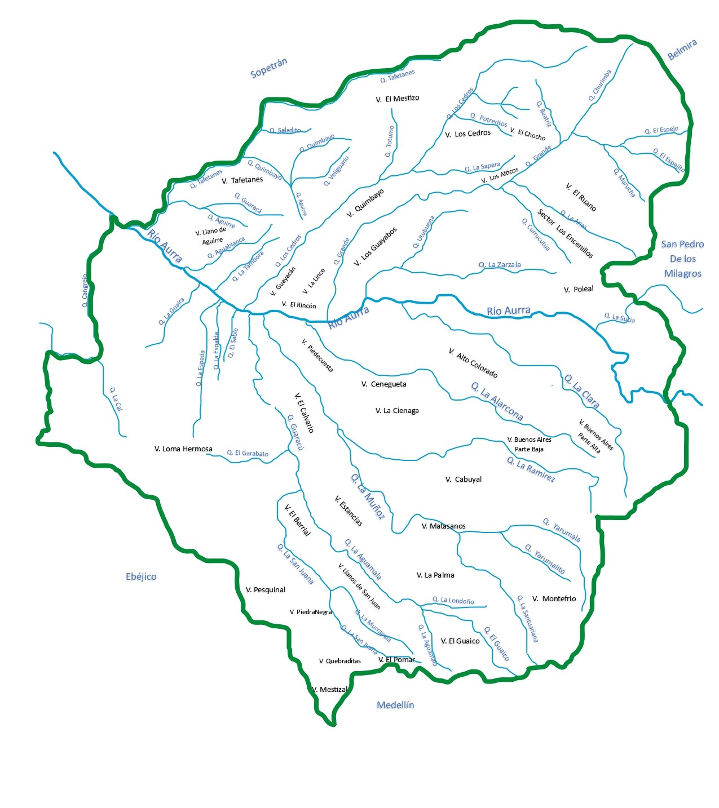
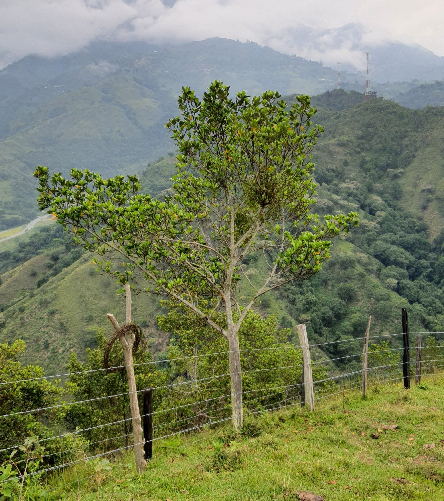
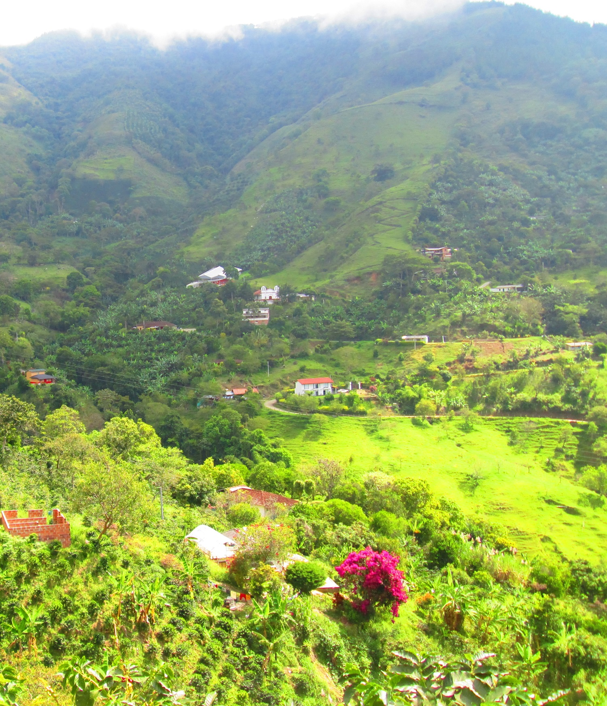
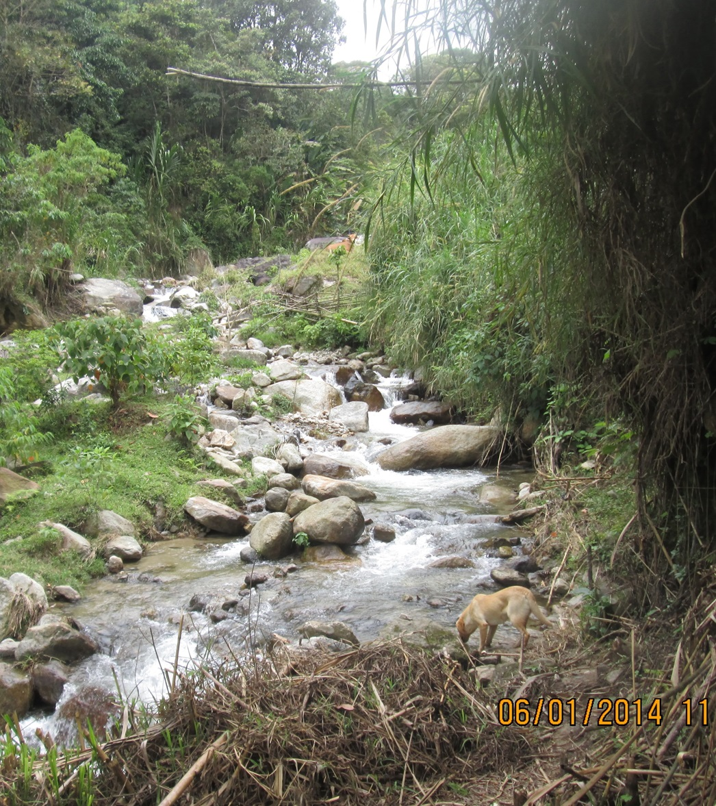

Río Aurra: Explorando y Protegiendo Nuestras Raíces Hídricas
Descripción del proyecto: En este primer proyecto, investigamos el río Aurra para conocer su nacimiento, sus ecosistemas y las especies que habitan su cuenca y microcuencas. Al profundizar en su biodiversidad, queremos crear estrategias que ayuden a proteger y conservar este recurso natural fundamental para la región de Antioquia.

Páramo de las Baldías

Cuenca del Río

Fauna y Flora

Veredas

MicroCuenca Quebrada La Muñoz

MicroCuenca Quebrada Grande